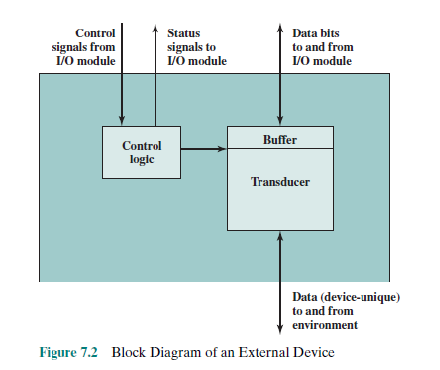

☛ They use a cassette-type reel-to-reel plastic tape.

Computer Architecture
Memory Vs. Storage
➠ Storage, also known as mass media or auxiliary storage, refers to the various media on which a computer system can store data.
➠ Storage devices hold programs and data in units called files.
➠ Files are stored in directories or folders.
➠ Memory is a temporary workplace where the computer transfers the contents of a file while it is being used.
Hard Drive
RAM Memory
RAM Vs. ROM
Read Only Memory (ROM): is a small area of permanent memory that provides startup instructions when the computer is turned on. You can not store any data in ROM. The instructions in ROM are set by the manufacturer and cannot be changed by the user. The last instruction in ROM directs the computer to load the operating system. Every computer needs an operating system. This is a special computer program that must be loaded into memory as soon as the computer is turned on. Its purpose is to translate your instructions in English into Binary so that the computer can understand your instructions. The operating system also translates the results generated by your computer into English when it is finished so that we can understand and use the results. The operating system comes with a computer.
Random Access Memory (RAM): is the area of memory where data and program instructions are stored while the computer is in operation. This is temporary memory. NOTE: The data stored in RAM is lost forever when the power is turned off. For this reason it is very important that you save your work before turning off your computer. This is why we have peripheral storage devices like your computer hard disk and floppy diskettes.
➠ Random access memory stores the programs and data the computer is currently using. RAM is much faster than other forms of storage.
➠ RAM is erased when you turn off the computer, so it is volatile storage.
➠ To save data more permanently, save it to the hard drive or another permanent storage device.
➠ Read-only memory holds the instructions needed for startup. ROM is a nonvolatile storage, which means the data isn’t erased when the power is turned off.
Why is Storage necessary?
☛ Storage:
➠ Retains data when the computer is turned off.
➠ Is cheaper than memory.
➠ Plays an important role during startup.
➠ Plays an input role when starting applications.
➠ Is needed for output.
➠ Devices can hold a large amount of data.
Storage Devices
☛ Storage devices are:
➠ Hardware that is capable of retaining data when the electricity is turned off.
➠ Able to read (retrieve) data from a storage medium (disk/tape).
➠ Able to write (record) data to a storage medium.
Types of Storage Technologies
☛ Sequential:
↳ Hardware that reads and writes data in a serial (one after the other) fashion.
☛ Random-Access:
↳ Hardware that reads and writes data without going through a sequence of locations.
☛ Magnetic:
↳ Hardware that uses disks or tapes that are coated with magnetic material.
☛ Optical:
↳ Hardware that uses laser beams to read data from plastic disks.
☛ Solid State:
↳ Devices that use nonvolatile memory chips to read and write data.
The Storage Hierarchy
➤ Storage hierarchy consists of three levels. They are:
☛ Online storage:
↳ Also called primary storage, it is made up of the storage devices that are actively available to the computer system. User action is not required.
☛ Near-online storage:
↳ Also called secondary storage, it is not readily available to the computer system. The user performs an action, such as inserting a disk, to make it available.
☛ Offline storage:
↳ Also called tertiary storage or archival storage, it is not readily available to the computer system. Devices such as tape backup units store data for archival purposes.
Capacity and Speed of Storage Devices
| Image | Floppy Disk | Hard Drive | CD ROM / DVD |
|---|---|---|---|
| Capacity | 720 KB to 1.44 MB | Up to 1 TB | CD-ROM 650 MB; DVD 17 GB |
| Access Time | 100 ms | 6 to 12 ms | 80 to 800 ms |
➤ A storage device performance is measured by:
☛ Capacity:
↳ The number of bytes of data that a device can hold.
☛ Access Time:
↳ The amount of time, in milliseconds (ms), it takes for the device to begin reading data.
Disks and Disk Drives
A disk drive contains electronics for exchanging data, control, and status signals with an I/O module plus the electronics for controlling the disk read/write mechanism. In a fixed-head disk, the transducer is capable of converting between the magnetic patterns on the moving disk surface and bits in the device buffer (Figure 7.2). A moving-head disk must also be able to cause the disk arm to move radially in and out across the disk’s surface.

☛ A disk or diskette is a portable storage medium.
☛ Disks are circular plastic disks coated with a magnetically sensitive film.
☛ Disks work with a disk drive.
☛ High-density floppy disks:
↳ Store 1.44 MB of data.
☛ Super Disk and High FD disks:
↳ Store up to 250 MB of data.
Disk Organization
☛ A disk is formatted that is, it is divided into tracks and sectors and a file allocation table (FAT) is created.
☛ Track:
↳ Circular band.
☛ Sector:
↳ Pie shaped section.
☛ Cluster:
↳ Two or more adjacent sectors.
☛ FAT:
↳ Keeps track of specific locations of files.
How do Hard Disks work?
➠ Hard Disks are a high-speed, high-capacity storage devices.
➠ The Hard Disk drive is your computer primary device for permanent storage of software and documents.
➠ Hard Drives are nonvolatile storage devices.
➠ An internal hard drive resides in the unit and holds all permanently stored programs and data.
➠ Hard Disks can be divided into partitions to enable computers to work with more than one operating system.
Magnetic Tape
Magnetic tape is the oldest and most cost-effective of all mass-storage devices. First-generation magnetic tapes were made of the same material used by analog tape recorders. A cellulose-acetate film one-half inch wide (1.25 cm) was coated on one side with a magnetic oxide. Twelve hundred feet of this material was wound onto a reel, which then could be hand-threaded on a tape drive. These tape drives were approximately the size of a small refrigerator. Early tapes had capacities under 11MB, and required nearly a half hour to read or write the entire reel.
☛ Magnetic tape backup units store large amounts of data that are not used frequently.
☛ They use a cassette-type reel-to-reel plastic tape.
Tape Backup Unit
CD-ROM Disks and Drives
CD-ROM CD-ROMs are polycarbonate (plastic) disks 120 millimeters (4.8 inches) in diameter to which a reflective aluminum film is applied. The aluminum film is sealed with a protective acrylic coating to prevent abrasion and corrosion. The aluminum layer reflects light that emits from a green laser diode situated beneath the disk. The reflected light passes through a prism, which diverts the light into a photodetector. The photodetector converts pulses of light into electrical signals, which it sends to decoder electronics in the drive (see Figure 7.13). Compact disks are written from the center to the outside edge using a single spiraling track of bumps in the polycarbonate substrate. These bumps are called pits because they look like pits when viewed from the top surface of the CD. Lineal spaces between the pits are called lands. Pits measure 0.5 microns wide and are between 0.83 and 3.56 microns long. (The edges of the pits correspond to binary 1s.) The bump formed by the underside of a pit is as high as one-quarter of the wavelength of the light produced by the green laser diode.

☛ CD-ROM stands for Compact Disk-Read Only Memory.
☛ They are capable of storing 650 MB of data.
☛ They are used for storing operating systems, large application programs, and multimedia programs.
CD-R and CD-RW
DVD-ROM Disks and Drives
DVD Digital versatile disks, or DVDs (formerly called digital video disks), can be thought of as quad-density CDs. DVDs rotate at about three times the speed of CDs. DVD pits are approximately half the size of CD pits (0.4 to 2.13 microns) and the track pitch is 0.74 microns. Like CDs, they come in recordable and nonrecordable varieties. Unlike CDs, DVDs can be single-sided or double-sided, called single layer or double layer. Single-layer and double-layer 120-millimeter DVDs can accommodate 4.7GB and 8.54GB of data, respectively. The 2048-byte DVD sector supports the same three data modes as CDs. With its greater data density and improved access time, one can expect that DVDs will eventually replace CDs for long-term data storage and distribution.
☛ DVD stands for Digital Video Disk.
☛ They use technology similar to CD-ROM.
☛ They are capable of storing up to 17GB of data.
☛ Their data transfer rate is comparable to that of hard disk drives.
☛ DVD-RAM:
↳ Has the ability to read/write data.